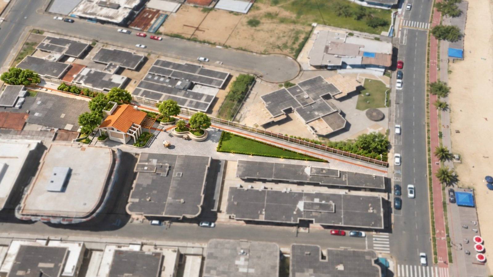
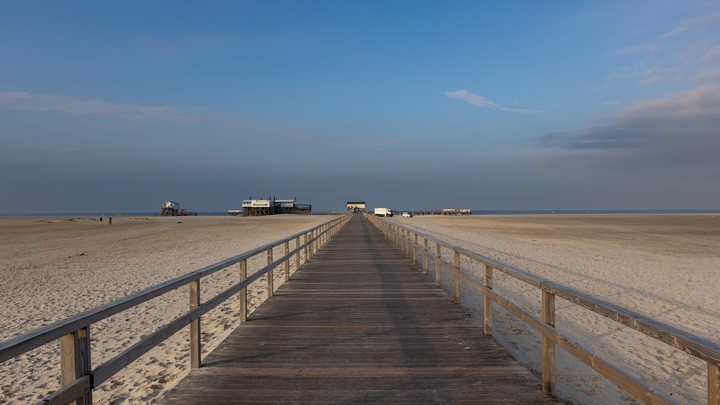
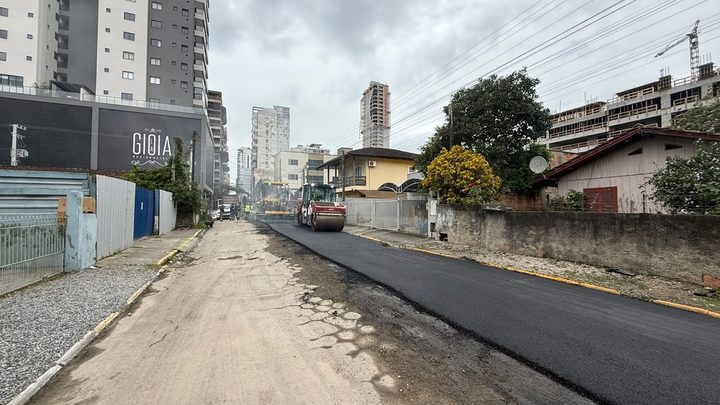

Itapema · Infraestrutura
Itapema · InfraestruturaItapema fechou em R$ 307,9 mil a estrutura recreativa da Praça Edegar Von Buettner, e a reforma anterior da mesma praça levou seis prorrogações e 240 dias a mais
A linha do tempo da praça, em dez atos oficiais.
A Prefeitura assinou na quarta-feira, 30 de setembro, a ordem de serviço da obra de R$ 307.925,78 na Praça Edgar Von Buettner, que a cidade chama de Praça do Dominó. E a nota oficial trouxe o dado que faltava: a praça fica no Centro, entre as Ruas 145 e 147, na servidão de acesso à praia. Em 25 de setembro escrevemos aqui que nenhum documento público do contrato dizia o bairro da obra. Agora diz, e não foi o Diário Oficial que respondeu.
Em 30 segundos · Modo de Leitura, formato original Santa Informa
A Prefeitura de Itapema assinou a ordem de serviço de uma obra.
Foi na quarta-feira, 30 de setembro.
A obra é na Praça Edgar Von Buettner.
A cidade conhece o lugar como Praça do Dominó.
O valor é de R$ 307.925,78.
A nota oficial diz onde fica.
No Centro, entre as Ruas 145 e 147.
Na servidão de acesso à praia.
Esse endereço não estava em documento nenhum.
Nós tínhamos registrado essa falta em 25 de setembro.
A obra tem 68,09 m² de estrutura coberta.
Mais a revitalização da área externa.
Dentro vai salão de convivência.
Churrasqueira, pia com bancada e sanitários.
Banheiro acessível, climatização e luz de LED.
Fora vai pergolado, paver, grama e gradil.
O contrato foi assinado em 22 de setembro.
A vigência é de seis meses.
Ela termina em 22 de março de 2027.
A ordem de serviço saiu oito dias depois do contrato.
Sobravam 173 dias de vigência naquele dia.
A praça já teve obra antes.
Foi a revitalização de 2024, com outra empresa.
Ela precisou de seis aditivos.
E de 240 dias a mais que o prazo combinado.
Terminou em 29 de setembro de 2025.
Isso foi 366 dias antes desta ordem de serviço.
A empresa de agora é a Santos e Santana.
O prazo de execução não foi divulgado.
InfraestruturaPublicada em Redação Santa Informa

A Prefeitura de Itapema assinou na quarta-feira, 30 de setembro, a ordem de serviço da obra da Praça Edgar Von Buettner, no Centro, conhecida na cidade como Praça do Dominó. O investimento é de R$ 307.925,78. A nota publicada pelo município informa que a área fica entre as Ruas 145 e 147, na servidão de acesso à praia.
Esse endereço é notícia porque não existia em documento público. Em 25 de setembro abrimos aqui os dez atos do Diário Oficial dos Municípios que contam a história dessa praça e registramos a falta com todas as letras: um contrato de R$ 307,9 mil tinha saído sem que nenhum papel dissesse em que bairro a obra ia acontecer, e quem quisesse ir olhar não sabia para onde ir. A resposta veio seis dias depois, pelo site da Prefeitura, e não pelo Diário.
A ordem de serviço é o papel que autoriza a empresa a começar. Ela saiu oito dias depois da assinatura do Contrato nº 164/2026, feita em 22 de setembro com a Santos e Santana. A vigência é de seis meses contados da assinatura, o que leva a conta até 22 de março de 2027. No dia da ordem de serviço, então, sobravam 173 dias dos 181 do contrato. Essa subtração é nossa.
O projeto é da secretaria de Governo e Infraestrutura e prevê 68,09 m² de estrutura coberta, mais a revitalização da área em volta. Dentro entram salão para convivência e atividades recreativas, churrasqueira, pia com bancada, sanitários, banheiro acessível para pessoa com deficiência, climatização e iluminação em LED. Fora entram pergolado, passeio em paver, áreas com grama, gradil de proteção e adequações de acessibilidade. É a primeira vez que essa lista aparece: o extrato do contrato fala em "estrutura recreativa" e para por aí. Para o tesoureiro da Associação do Dominó, Luiz, ouvido pela própria Prefeitura, a assinatura fecha um pedido antigo da entidade. "É uma alegria muito grande ver esse projeto saindo do papel", disse ele na nota oficial.
Vale guardar a data. A revitalização anterior da praça, o Contrato nº 091/2024, firmado com outra empresa, tinha prazo até 1º de fevereiro de 2025 e só terminou em 29 de setembro daquele ano, depois de seis termos aditivos que somaram 240 dias. Entre o fim daquela obra e a ordem de serviço desta passaram 366 dias. Prorrogar prazo de obra é legal e acontece o tempo todo, e o artigo 105 da Lei 14.133/2021, que permitiu esticar a primeira, está citado também no contrato de agora.
O resumo de 30 segundos está no topo e a versão completa é o texto acima. Aqui ficam as três leituras da casa sobre o mesmo assunto.
Clara, a otimista
Finalmente a gente sabe onde é, e o lugar é bom. Entre as Ruas 145 e 147, no caminho de quem desce para a praia, no Centro. Quem joga dominó ali já joga há anos, em mesa de plástico e sol na cabeça. Agora vem telhado, banheiro acessível, pia com bancada e ventilação.
E repare no tamanho da coisa. São 68 metros quadrados de salão num terreno que hoje é passagem. Praça pequena em cidade que cresceu para cima rende muito, porque vira quintal de quem mora em apartamento de 40 metros. O desenho que a Prefeitura divulgou mostra sombra, grama e banco, que é o que falta em quarteirão de prédio colado em prédio.
Seu Prudêncio, o criterioso
Merece atenção a diferença entre vigência e cronograma. O que está publicado é que o contrato vale por seis meses a partir de 22 de setembro. Isso não diz quando a obra fica pronta, diz até quando o contrato existe. Com a ordem de serviço saindo no dia 30, restam 173 dias dentro dessa janela, e a temporada de verão acontece inteira no meio dela.
Vale acompanhar o histórico, sem drama. A obra anterior nessa mesma praça precisou de seis aditivos e 240 dias além do combinado, e o mesmo artigo 105 que permitiu aquilo está citado neste contrato. Não é acusação nenhuma, prorrogação é prevista em lei. É só informação que convém ter à mão quando alguém perguntar se a praça fica pronta antes do verão. Uma sugestão útil para a Prefeitura: publicar o cronograma físico-financeiro junto com a ordem de serviço resolveria a dúvida num parágrafo.
Dito isso, registro o que melhorou de verdade. Oito dias entre contrato e ordem de serviço é rápido para obra pública. A nota desta quarta trouxe endereço, metragem e a lista do que entra na construção, três coisas que os extratos do Diário não traziam. Foi exatamente a lacuna que apontamos em setembro, e ela foi fechada. Isso merece ser dito.
Caco, o sarcástico
Encontraram a praça. Depois de dez atos oficiais, dois contratos, uma concorrência eletrônica e seis aditivos, alguém finalmente escreveu em qual rua fica. Está no Centro, entre a 145 e a 147, onde provavelmente sempre esteve.
E o nome segue em disputa. Em 2024 era Edegar. Em 2026 é Edgar. Na boca do povo é Dominó. A praça tem três identidades e um endereço novo, que é mais do que muita gente consegue.
Agora sério, que aqui tem coisa boa: a Prefeitura divulgou o desenho, a metragem, a lista do que vai ser construído e ainda botou foto aérea mostrando o lugar. Isso é mais informação do que o Diário Oficial deu em dois anos de papel. Se a próxima obra sair assim já na largada, eu fico sem assunto, e tudo bem.
Fontes: a assinatura da ordem de serviço em 30 de setembro, o endereço entre as Ruas 145 e 147 no Centro, os 68,09 m² de estrutura, a lista do que vai ser construído, o nome da empresa executora e o valor de R$ 307.925,78 estão na nota Bairro Centro ganhará Praça do Dominó, publicada pela Prefeitura de Itapema em 30 de setembro de 2026, de onde também saiu a imagem do projeto. A data de 22 de setembro, o prazo de seis meses e a empresa contratada estão no extrato do Contrato nº 164/2026, publicado no Diário Oficial dos Municípios de Santa Catarina. A homologação está no extrato do Processo nº 105/2026 e o edital no extrato da Concorrência Eletrônica nº 03.004.2026. O contrato de 2024 e os seis termos aditivos que somaram 240 dias estão nos extratos do Contrato nº 091/2024 e dos aditivos 1º, 2º, 3º, 5º e 6º. Os oito dias entre contrato e ordem de serviço, os 173 dias restantes de vigência, a data de 22 de março de 2027 e os 366 dias desde o fim da obra anterior são contas nossas sobre essas datas. Todas as páginas foram abertas e conferidas nesta quinta-feira. O levantamento completo da praça está em nossa matéria de 25 de setembro.
Itapema · InfraestruturaA linha do tempo da praça, em dez atos oficiais.

Itapema · InfraestruturaOutra obra de orla, com prazo e valor abertos.

Itapema · InfraestruturaQuanto tempo uma promessa leva para virar obra.